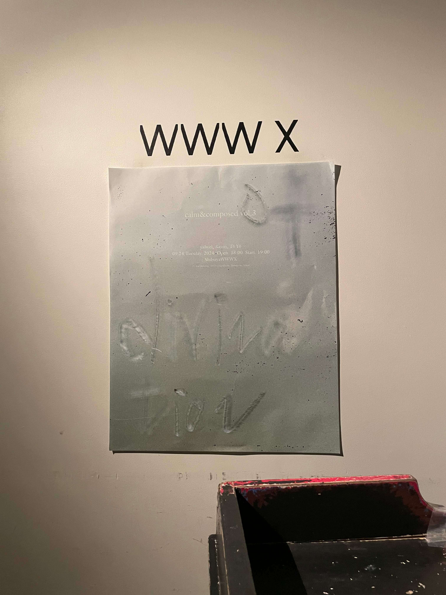
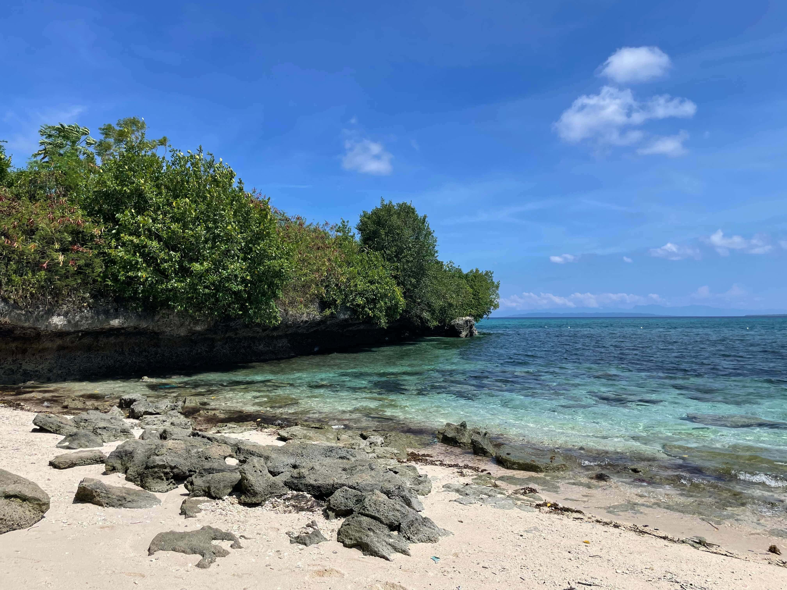

1998年生まれ。埼玉県出身。 不動産賃貸仲介の営業を経て、職業訓練校でWebデザインを学び、2025年8月にWeb制作会社へ入社。現在はサイトデザイン、ロゴデザイン、UIデザインなど、多岐にわたる制作業務に携わっています。
音楽、映画、旅行、スノーボードが好きです。普段は音楽イベントに足を運んだり、気になる美術展があれば観に行ったりしています。好奇心が強く、気になると行動に移すことが多く、過去には埼玉県から山口県までママチャリで1人旅したこともあります。
なぜwebデザイナーを目指そうと？
父が建築デザインの仕事をしていた影響で、幼い頃から展覧会に連れて行ってもらうことが多く、家の中でも空間の美しさやデザインについて話す機会が日常にありました。
自然と「ものづくり」への興味が芽生え、大人になってからは美術展にもよく足を運ぶようになりました。
前職の不動産賃貸業では、物件情報の掲載内容によって反響や来店数が大きく変わることを実感し、「伝え方で結果が変わる」ことの面白さを体験。
Webの力の大きさに驚きました。
同時に、自分が心地よいと感じるデザインが、誰かの行動を後押しする力を持つことに魅力を感じ、「好きなデザインで成果を生み出す仕事」に携わりたいという思いが強くなりました。自分の手で実践的に学びたいと感じ、職業訓練校でWebデザインを学ぶことを決意しました。
誠実に、最後まで
向き合います
知らないことに
ワクワクする、
好奇心が原動力です
相手の気持ちを想像し、
そっと寄り添う